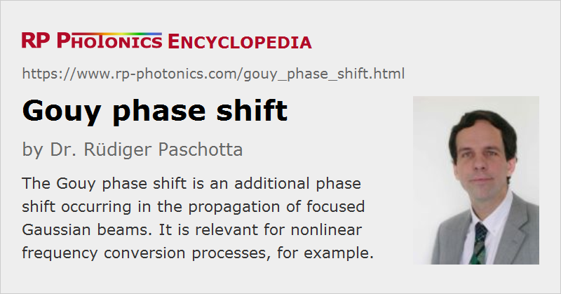

Gouy Phase Shift
Definition: an additional phase shift occurring in the propagation of focused Gaussian beams
More general terms: optical phase shift
German: Gouy-Phasenverschiebung
How to cite the article; suggest additional literature
Author: Dr. Rüdiger Paschotta
(Widespread wrong spelling: “Guoy phase shift”)
Along its propagation direction, a Gaussian beam acquires a phase shift which differs from that for a plane wave with the same optical frequency. This difference is called the Gouy phase shift [1]:
where zR is the Rayleigh length and z = 0 corresponds to the position of the beam waist. It results in a slightly increased distance between wavefronts, compared with the wavelength as defined for a plane wave of the same frequency. This also means that the phase fronts have to propagate somewhat faster, leading to an effectively increased local phase velocity.
Overall, the Gouy phase shift of a Gaussian beam for going through a focus (from the far field to the far field on the other side of the focus) is π.
It is actually not surprising that the phase shift of a Gaussian beam is not exactly the same as for a plane wave. A Gaussian beam can be considered as a superposition of plane waves with different propagation directions. Those plane wave components with propagation directions different from the beam axis experience smaller phase shifts in z direction; the overall phase shift arises from a superposition of all these components.
For higher-order transverse modes, the Gouy phase shift is stronger. For TEMnm modes, for example, it is stronger by the factor 1 + n + m. This causes the resonance frequencies of higher-order modes in optical resonators to be somewhat higher. By lifting the frequency degeneracy of resonator modes, the Gouy phase shift also has an important impact on the beam quality achieved in a laser resonator under the influence of optical aberrations [5].
Questions and Comments from Users
Here you can submit questions and comments. As far as they get accepted by the author, they will appear above this paragraph together with the author’s answer. The author will decide on acceptance based on certain criteria. Essentially, the issue must be of sufficiently broad interest.
Please do not enter personal data here; we would otherwise delete it soon. (See also our privacy declaration.) If you wish to receive personal feedback or consultancy from the author, please contact him e.g. via e-mail.
By submitting the information, you give your consent to the potential publication of your inputs on our website according to our rules. (If you later retract your consent, we will delete those inputs.) As your inputs are first reviewed by the author, they may be published with some delay.
Bibliography
| [1] | L. G. Gouy, “Sur une propriete nouvelle des ondes lumineuses”, C. R. Acad. Sci. Paris 110, 1251 (1890) |
| [2] | A. Rubinowicz, “On the anomalous propagation of phase in the focus”, Phys. Rev. 54 (11), 931 (1938), doi:10.1103/PhysRev.54.931 |
| [3] | L. G. Gouy, “Sur la propagation anomale des ondes”, Compt. Rendue Acad. Sci. Paris 111, 33 (1890) |
| [4] | R. W. Boyd, “Intuitive explanation of the phase anomaly of focused light beams”, J. Opt. Soc. Am. 70 (7), 877 (1980), doi:10.1364/JOSA.70.000877 |
| [5] | R. Paschotta, “Beam quality deterioration of lasers caused by intracavity beam distortions”, Opt. Express 14 (13), 6069 (2006), doi:10.1364/OE.14.006069 (explaining the important impact of the Gouy phase on the laser beam quality) |
See also: optical phase, Gaussian beams, wavelength, The Photonics Spotlight 2008-11-25
and other articles in the category general optics
|  |
If you like this page, please share the link with your friends and colleagues, e.g. via social media:
These sharing buttons are implemented in a privacy-friendly way!